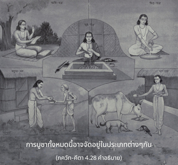

จากการถือคำปฏิญาณโดยเคร่งครัด บางคนรู้แจ้งด้วยการบูชาสิ่งของของตน และบางคนปฏิบัติสมถะความเพียรอย่างเคร่งครัดด้วยการฝึกโยคะอิทธิฤทธิ์แปดวิธี หรือด้วยการศึกษาคัมภีร์พระเวทเพื่อพัฒนาความรู้ทิพย์



 ไม่รับประทานอาหารบางชนิด ไม่รับประทานวันละสองมื้อ และไม่ออกไปจากบ้าน")
การบูชาทั้งหมดนี้อาจจัดอยู่ในประเภทต่างๆ กัน มีบุคคลผู้บูชาสิ่งของของตนในรูปของการบริจาคทานต่างๆ ในประเทศอินเดีย กลุ่มนักธุรกิจคนรวย หรือกลุ่มผู้มียศเป็นเจ้าจะเปิดสถาบันการกุศลต่างๆ เช่น ธรฺม-ศาลา (บ้านพักเพื่อการกุศล), อนฺน-กฺเษตฺร (แปลงนาที่เพาะปลูก), อติถิ-ศาลา (บ้านพักแขกผู้มาเยือน), อนาถาลย (บ้านพักคนอนาถา) และ วิทฺยา-ปีฐ (สถาบันการศึกษา) ในประเทศต่างๆ ก็เช่นเดียวกันมีโรงพยาบาล บ้านผู้สูงอายุ และมูลนิธิการกุศลแบบนี้มากมาย ที่แจกจ่ายอาหาร การศึกษา และรักษาโรคฟรีสำหรับคนจน กิจกรรมการกุศลทั้งหมดนี้เรียกว่า ทฺรวฺยมย-ยชฺญ มีบางคนอาสาปฏิบัติสมถะมากมายเพื่อความเจริญสูงขึ้นในชีวิต หรือเพื่อส่งเสริมให้ไปสู่โลกที่สูงกว่าภายในจักรวาล เช่น จนฺทฺรายณ และ จาตุรฺมาสฺย วิธีการเหล่านี้ต้องปฏิญาณตนอย่างเคร่งครัด ในการดำเนินชีวิตภายใต้กฎเกณฑ์ที่เข้มงวดกวดขัน ตัวอย่างเช่น ภายใต้คำปฏิญาณ จาตุรฺมาสฺย ผู้อาสาจะไม่โกนหนวดเป็นเวลาสี่เดือนในหนึ่งปี (เดือนกรกฎาคม-เดือนตุลาคม) จะไม่รับประทานอาหารบางชนิด ไม่รับประทานวันละสองมื้อ และไม่ออกไปจากบ้าน การถวายบูชาความสะดวกสบายของชีวิตเช่นนี้ เรียกว่า ตโปมย-ยชฺญ ยังมีบางคนปฏิบัติโยคะ การเข้าฌานต่างๆ เช่น ระบบ ปตญฺชลิ (เพื่อกลืนเข้าไปในความเป็นอยู่แห่งสัจธรรม) หรือ หฐ-โยค หรือ อษฺฏางฺค-โยค (เพื่อความสมบูรณ์บางอย่างโดยเฉพาะ) และบางคนเดินทางไปตามสถานที่ทางศักดิ์สิทธิ์ต่างๆ ของนักบุญ การปฏิบัติทั้งหมดนี้เรียกว่า โยค-ยชฺญ ถวายการบูชาเพื่อความสมบูรณ์บางประการในโลกวัตถุ มีบางคนศึกษาวรรณกรรมพระเวทต่างๆ โดยเฉพาะ เช่น อุปนิษทฺ และ เวทานฺต-สูตฺร หรือปรัชญา สางฺขฺย ทั้งหมดนี้เรียกว่า สฺวาธฺยาย-ยชฺญ หรือปฏิบัติตนถวายบูชาด้วยการศึกษาโยคะ ทั้งหมดนี้ปฏิบัติด้วยความศรัทธาในการถวายการบูชาต่างๆ และค้นหาสภาวะชีวิตที่สูงกว่า อย่างไรก็ดี กฺฤษฺณจิตสำนึกแตกต่างจากสิ่งเหล่านี้ เพราะว่าเป็นการรับใช้องค์ภควานฺโดยตรง เราไม่สามารถบรรลุถึงกฺฤษฺณจิตสำนึกได้ด้วยการถวายบูชาวิธีหนึ่งวิธีใดดังที่ได้กล่าวมาข้างต้นนี้ แต่เราสามารถบรรลุได้โดยพระเมตตาธิคุณขององค์ภควานฺ และสาวกผู้เชื่อถือได้ของพระองค์เท่านั้น ดังนั้น กฺฤษฺณจิตสำนึกจึงเป็นทิพย์